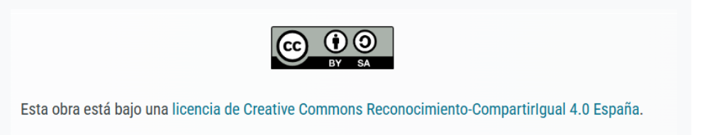

Este documento está bajo una licencia Creative Commons: Reconocimiento - compartir igual 4.0.

Este documento está bajo una licencia Creative Commons: Reconocimiento - compartir igual 4.0.

| Título | Descargar el fichero fuente |
|---|---|
| Descripción | Esta SdA está dirigida al alumnado de 3º ESO en el área de Física y Química. |
| Autoría | Pedro Luis García Sánchez |
| Licencia | Creative Commons BY-SA 4.0 |
Este contenido fue creado con eXeLearning, el editor libre y de fuente abierta diseñado para crear recursos educativos.
Obra publicada con Licencia Creative Commons Reconocimiento Compartir igual 4.0